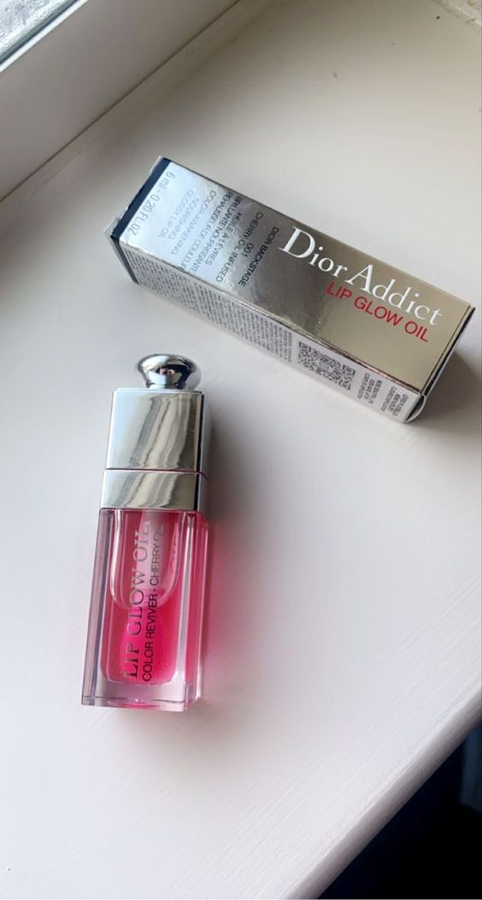

|
CORRECTOR
- Un corrector es similar a una base pero,
por lo general, es mas grueso y tapa
las ojeras,las manchas de edad , las
imperfecciones y mas ocultando los
pigmentosy mezclandolas
con la piel
|
|
BASE
- ayuda a que la piel
luzca un mejor aspecto,
de igual forma puede ayudar
a disminuir la aparencia de
algunas imperfecciones
|
 |
tintas benefyt paquete
- tintas benefyt de buena cobertura se pusieron de moda adquiere tu paquete
- $500
|
 |
LIP GLOW
- El primer bálsamo de labios Dior formulado con un 97 % de ingredientes
de origen natural** que reaviva delicadamente el color natural de los labios con
un brillo a medida durante 6 h*** y los hidrata durante 24 h*.
- $1000
|
 |
LIP GLOW OIL
- El bálsamo de labios Dior Addict Lip Glow se convierte en un aceite
para labios brillante que protege intensamente, embellece
y realza el color natural de los labios de forma duradera.
Auténtico tratamiento enriquecido con aceite de cereza,
el aceite para labios Dior Addict Lip Glow Oil nutre,
protege, suaviza y revitaliza los labios al instante.
- $1000
|  |
RIMEL MAC
- Añade capas infinitas de volumen y longitud
con la máscara de pestañas M-A-C Stack. Esta fórmula nunca antes vista,
de construcción continua y resistente a los grumos, te ofrece un volumen
personalizable que desafía la gravedad, desde el natural hasta el siguiente nivel,
junto con una elevación y longitud instantánea de las pestañas.
Refleja tu estado de ánimo único y refleja tu individualidad
con el cepillo Superstack Mega Brush, que proporciona un volumen instantáneo
a la primera pasada y es ideal para las pestañas más largas o superiores.
- $500
|